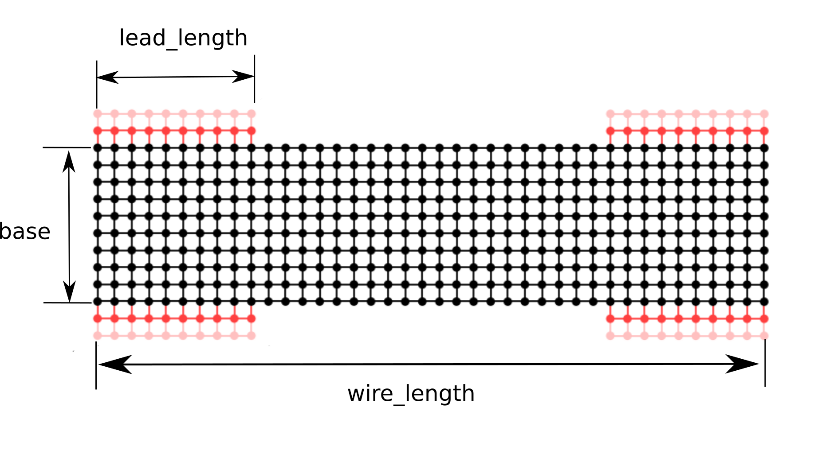

Public functions¶
-
class
garn.Wire2D(base=3, wire_length=30, lead_length=5, identifier='unnamed', file_name='', step_length=1, start_right=True, start_left=True, end_right=True, end_left=True)¶ Wire2D facilitates the modelling of nanowire contact geometries in Kwant by actings as a help in constructing a 2D projection of a nanowire and attaching customizabel contacts in each end.
A Instance of Wire2D describes the properties of a 2D nanowire
Wire2D facilitates the modelling of nanowires by
Warning
If keyword parameter file_name is set to anything else than “” all other parameters are ignored. It is only to facilitate the use of parameter file_name that base, wire_length and, lead_length parameters are optional.
Parameters: base : int or float, optional
Width of wire.
wire_length : int or float, optional
Length of complete wire including leads.
lead_length : int or float, optional
Length of lead-wire interface in direction of the
Other Parameters: indentifier : str, optional
Identifies the wire represented in plots and data files produced by garn.
step_length : int or float, optional
Discretization step.
start_right : bool, optional
Boolian vaules of there should be a lead on the right side at the start of the wire (default True)
start_left : bool, optional
Boolian vaules of there should be a lead on the left side at the start of the wire (default True)
end_right : bool, optional
Boolian vaules of there should be a lead on the right side at the end of the wire (default True)
end_left : bool, optional
Boolian vaules of there should be a lead on the left side at the end of the wire (default True)
file_name : str, optional
Uses the data-file specified by the str to create a the instance
-
class
garn.Wire3D(base=3, wire_length=30, lead_length=5, identifier='unnamed', file_name='', step_length=1, start_top=True, start_right=True, start_left=True, start_bottom=False, end_top=True, end_right=True, end_left=True, end_bottom=False)¶ Wire3D facilitates the modelling of nanowire contact geometries in Kwant by actings as a help in constructing a hexagonal nanowire and attaching customizabel contacts in each end.
A Instance of Wire3D describes the properties of a 3D nanowire
Warning
If keyword parameter file_name is set to anything else than “” all other parameters are ignored. It is only to facilitate the use of parameter file_name that base, wire_length and, lead_length parameters are optional.
Parameters: base : int or float, optional
Width of wire.
wire_length : int or float, optional
Length of complete wire including leads.
lead_length : int or float, optional
Length of lead-wire interface in direction of the
Other Parameters: indentifier : str, optional
Identifies the wire represented in plots and data files produced by garn.
step_length : int or float, optional
Discretization step.
start_top : bool, optional
Boolian vaules of there should be a lead on the top at the start of the wire
start_right : bool, optional
Boolian vaules of there should be a lead on the right side at the start of the wire.
start_left : bool, optional
Boolian vaules of there should be a lead on the left side at the start of the wire.
start_bottom : bool, optional
Boolian vaules of there should be a lead on the bottom at the start of the wire
end_top : bool, optional
Boolian vaules of there should be a lead on the top at the end of the wire.
end_right : bool, optional
Boolian vaules of there should be a lead on the right side at the end of the wire.
end_left : bool, optional
Boolian vaules of there should be a lead on the left side at the end of the wire.
end_bottom : bool, optional
Boolian vaules of there should be a lead on the bottom at the end of the wire.
file_name : str, optional
Uses the data-file specified by the str to create a the instance.
-
garn.system_plot(wire)¶ Illustrative plot of wire sites and hoppings.
Basic plot of all the sites and hopping is the system. Semi-infinite contacts are plotted in read.
Parameters: System to be plotted.
Notes
For more advanced settings pass wire.sys to the kwant.plotter.plot. method.
-
garn.transmission(wire, start_energy, end_energy, number_of_points=500, print_to_commandline=True)¶ Calculate transmission through system.
Calculates the transmission in number_of_points equidistant points on the intervall [start_energy, end_energy).
Parameters: The wire model for with the transmission is calculated and energy and transmission attributes are changed.
start_energy : float
end_energy : float, optional
number_of_points : int, optional
print_to_commandline : bool
If true the resulting transmission energy pairs are printed in the terminal. (Default Ture beacuse good for monitoring progress)
Notes
The energy is given in units of \(t\).
\[t = \dfrac{\hbar^2}{2 m_e^* step\_length^2}\]\(m_e^*\) is the effective mass of the semiconduction and step_length is the discretization step that is set on initialization of
Wire2DandWire3Dinstanses.The transmission is given in units of \(\dfrac{e^2}{\hbar}\).
The function changes the attributes energy and transmission of wire and saves to the file “data-” + wire.identifier.